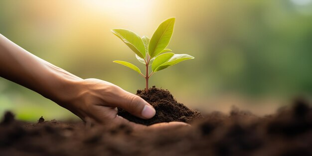
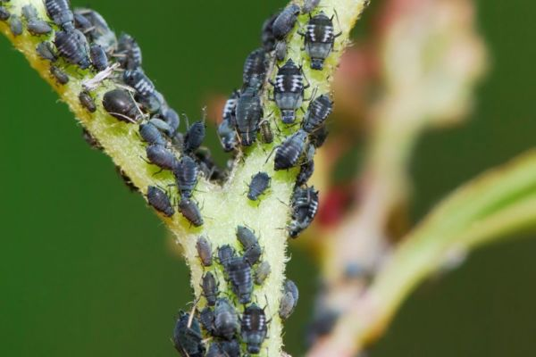
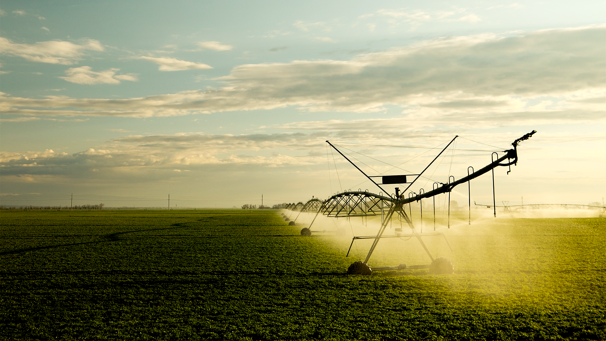
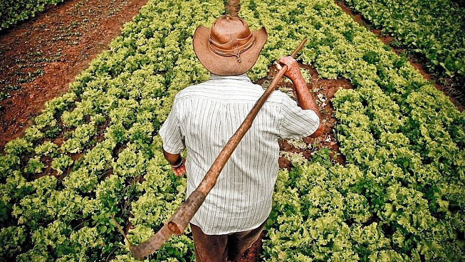

Nesta seção você encontra orientações sobre as melhores práticas de plantio. São dicas sobre preparo do solo, escolha de sementes, época ideal para plantio e cuidados necessários para garantir uma boa colheita.
Saiba mais
Pragas podem causar grandes prejuízos na produção agrícola. Nesta seção apresentamos métodos de prevenção e controle de pragas, incluindo soluções naturais e técnicas que ajudam a proteger as plantações.
Saiba mais
A irrigação é fundamental para o crescimento saudável das plantas. Aqui você encontra informações sobre diferentes tipos de sistemas de irrigação, economia de água e técnicas que ajudam a manter o solo sempre na umidade ideal.
Saiba mais
